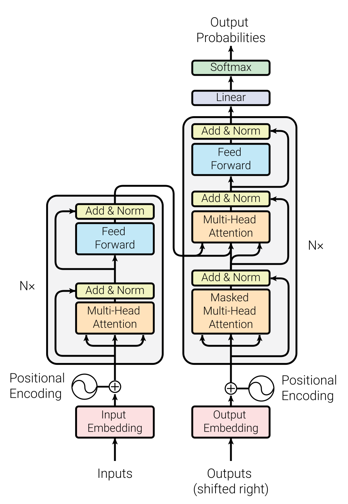

依据 Attention Is All You Need · Figure 1，重绘原始布局、模块、配色与连线。SVG 中的文字、方框和路径均可编辑；采用 Roboto Light 近似原图字体，字体与箭头细节仍有差异。
可编辑 SVG · 矢量 PDF · 高清 PNG · 完整源文件包

0% 显示原图，100% 显示重绘；50% 可检查对齐。
原图及其衍生重绘均标注来源，版权归相关权利人。本页用于图形学习与对照。